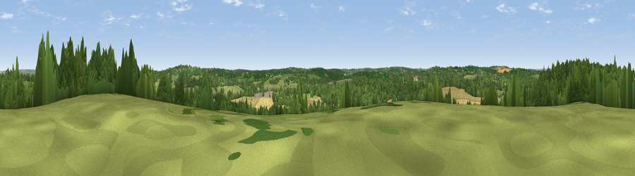

Elphicks Hill
#30638 in England · top 34% of its area beats it · near HorsmondenThe view, rendered

A 360° render of this exact spot computed from the terrain model, tree cover and land cover — summer colours, afternoon light, calibrated against photographs of famous viewpoints. Real trees, hedges and buildings will differ in detail.
The panorama
Grey silhouette: terrain skyline in each direction (720 bearings, Earth curvature and refraction included). Dashed green: skyline with trees (+15 m) and buildings (+8 m) as obstacles. Blue strip: how far the ground is visible on each bearing.
Where the view opens
Wedge length = distance to the farthest visible ground on that bearing (vegetation-aware). Rings at 10, 25 and 50 km.
What fills the view
43% woodland · 37% grassland · 17% cropland · 2% water ·
Angular shares of the visible panorama (visual magnitude), not map area. Landscape diversity 0.50 (0–1 Shannon).
Key numbers
More beautiful places nearby
The staircase of upgrades: each row has a higher view potential than everything closer. Driving times are estimates from straight-line distance, calibrated against real road routing — check an actual route before setting out.
| Place | Direction | Drive | Score |
|---|---|---|---|
| Viewpoint near Goudhurst | ESE · 3 km | ~7 min | 47.2 |
| Viewpoint near Brenchley | NNW · 4 km | ~9 min | 55.0 |
| Best Beech Hill | SW · 10 km | ~20 min | 55.6 |
| Viewpoint near Bidborough | WNW · 14 km | ~25 min | 57.2 |
| Brightling Obelisk [Brightling Down] | S · 18 km | ~30 min | 69.1 |
| Viewpoint near Three Oaks | SSE · 29 km | ~46 min | 69.3 |
| Viewpoint near Westwell | ENE · 30 km | ~47 min | 72.2 |
| Viewpoint near Fairlight | SSE · 31 km | ~48 min | 74.7 |
51.12084, 0.42522 · source: dobih hill · position refined by local search. Computed location — check access rights before visiting.